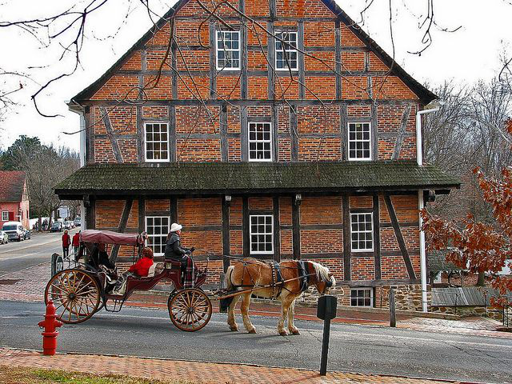
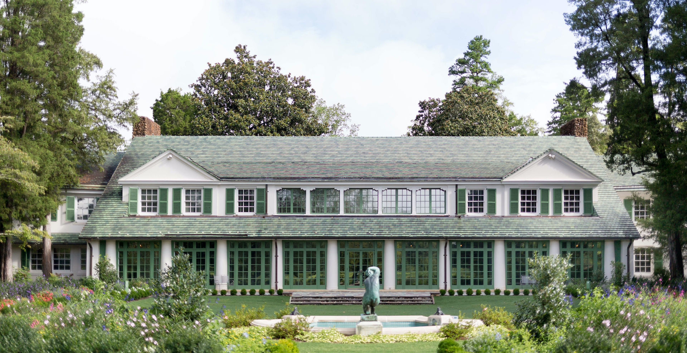
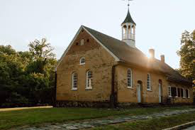

Old Salem - Old Salem Museums & Gardens is a historic site that shares the stories of diverse communities, including Moravian, Black, and Indigenous peoples, in the American South. As one of the nation’s most comprehensive history attractions, Old Salem invites visitors to explore the Historic Town of Salem, the galleries at the Frank L. Horton Museum Center—including the Museum of Early Southern Decorative Arts (MESDA)—and the Gardens at Old Salem, offering an engaging and memorable journey through history.

Reynolda House Museum and Park - Discover the 1917 estate of R.J. and Katharine Reynolds, a historic gem offering a blend of American art, beautifully preserved heirloom landscapes, unique boutiques, and more. Step into a world where history, culture, and elegance come together for a truly unforgettable experience.
Historic Bethabora - The Historic Bethabara Park Visitor Center exhibit, introduced in 2018, offers a new perspective on Bethabara’s past. Based on Records of the Moravians in North Carolina and other key sources, it shares the stories of residents—including the enslaved—and examines Moravian relationships with Native communities during the French & Indian and Cherokee Wars.